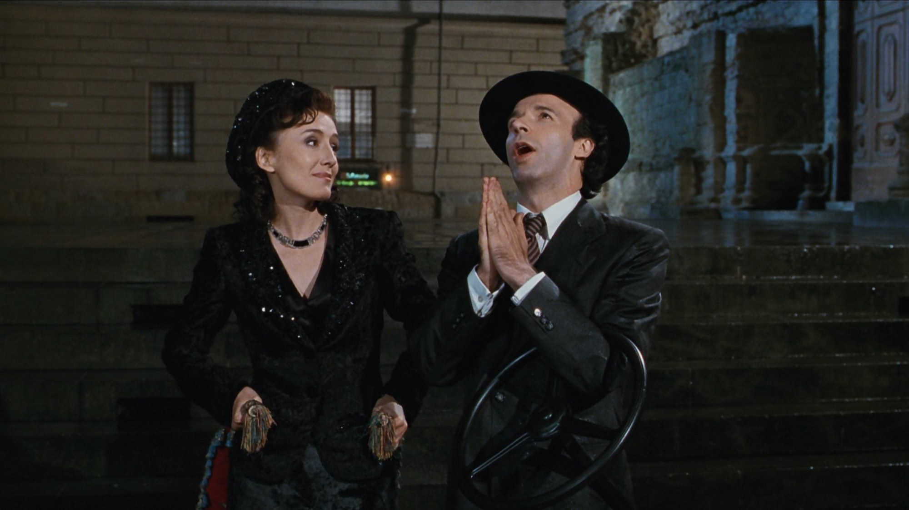
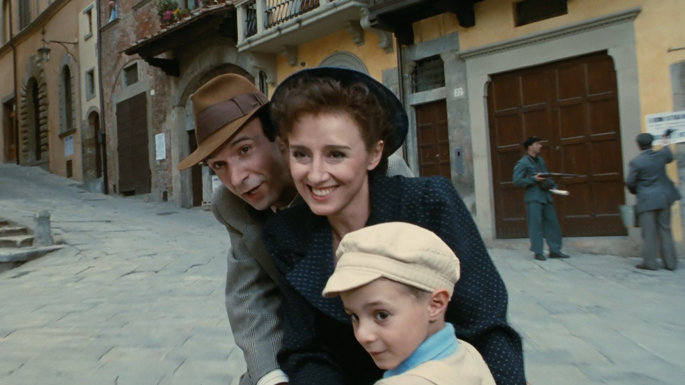
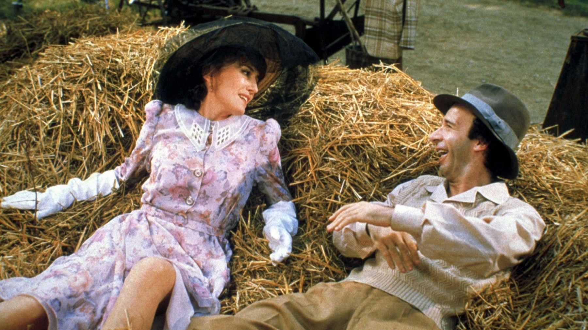

Dietro La vita è bella c'è un libro di sopravvissuto
Un libro di sopravvissuto, una fabbrica vicino a Terni e un bambino di sei anni: i retroscena del film di Benigni
Un padre spiega al figlio che il campo è un gioco a punti e che il premio finale è un carro armato vero. La scena delle regole è il cuore de La vita è bella, ma dietro quella leggerezza c'è stato un lavoro lungo, pieno di dubbi e di consulenze. Ecco sette retroscena, dal libro che ispirò Benigni agli Oscar del 1999.
Il libro di un sopravvissuto e il padre di Benigni
L'idea non nacque dal nulla. Benigni si ispirò alla storia di Rubino Romeo Salmonì, ebreo italiano deportato a Birkenau e sopravvissuto, che aveva raccontato la sua esperienza nel libro Ho sconfitto Hitler. A questo si aggiunse la memoria di famiglia, perché il padre di Benigni, militare dopo il 1943, passò due anni in un campo nazista. Benigni ha dichiarato di voler ricordare Salmonì come un uomo che voleva vivere nel modo giusto. Si capisce così il tono: Guido non nega il lager, ma lo trasforma in un gioco per proteggere il figlio, e quella scelta ha un'origine vera.
Un comico che temeva di offendere i sopravvissuti
All'inizio l'idea era quella di una commedia, ma Benigni temeva di ferire la sensibilità dei sopravvissuti. Gli amici gli sconsigliarono l'impresa, perché era un comico e non era ebreo, ma lui non rinunciò. Così cercò aiuto: si consultò con il Centro di documentazione ebraica contemporanea di Milano e coinvolse lo storico Marcello Pezzetti e Shlomo Venezia, sopravvissuto di Auschwitz. Questo lavoro spiega perché la comicità del film non prende in giro il lager, ma il modo in cui un adulto riesce a nasconderlo agli occhi di un bambino.

Il lager è una fabbrica abbandonata vicino a Terni
Le riprese iniziarono nel novembre 1996 e finirono nell'aprile 1997: si lavorò soprattutto nell'Aretino, ma ci furono tappe nel Lazio e a Papigno. Il titolo di lavorazione era Buongiorno Principessa. Il campo fu ricavato in una vecchia fabbrica dismessa vicino a Papigno, nel Ternano, mentre il centro storico di Arezzo diventò lo scenario della prima parte. Il dettaglio pesò, perché alimentò una polemica: qualcuno scambiò quel luogo per Auschwitz-Birkenau, ma Benigni rispose che il suo film non riguardava Auschwitz, dove i monti non esistono.
Le regole del gioco e un carro armato Sherman
Nella scena delle regole il comandante tedesco parla e Guido traduce volutamente in modo sbagliato le sue parole. Il gioco vale mille punti, chi arriva per primo vince un carro armato, mentre chi piange o chiede la mamma ne perde. Tra le finte regole c'è anche restare nascosti nella camerata, così il bambino evita la deportazione. Il carro del premio è un M4 Sherman. La scena funziona perché la bugia di Guido ha una funzione concreta, tenere al sicuro Giosuè, e non resta una semplice trovata comica.

Giosuè è il più giovane vincitore del suo premio
Giorgio Cantarini, nato a Orvieto il 12 aprile 1992, esordì al cinema con questo film e interpreta Giosuè. Pochi anni dopo vinse lo Young Artist Award, a sei anni, e risultò il vincitore più giovane e l'unico straniero tra i premiati. Il dato conta perché tutto il racconto passa dal suo sguardo: se il bambino non credesse al gioco, la bugia del padre non reggerebbe, quindi anche il pubblico smetterebbe di crederci con lui.
Tre Oscar su sette candidature e un salto sulle sedie
Il 21 marzo 1999 La vita è bella vinse tre Oscar su sette candidature: film straniero, attore a Benigni e colonna sonora a Nicola Piovani. Quando fu annunciato il film straniero, Benigni salì in piedi sulle spalliere delle poltrone davanti a lui e applaudì la sala. Nel discorso disse di aver consumato tutto il suo inglese e chiuse con i versi finali della Divina Commedia. Fu il primo attore premiato per un ruolo maschile in una lingua diversa dall'inglese. Il film arrivò a oltre 230 milioni di dollari di incasso nel mondo, perciò il successo fuori dall'Italia non fu un caso isolato.
Chi lo considera falso, e con quali argomenti
Eppure non tutti lo amarono. Nel 2005 Mario Monicelli criticò il carro armato con la bandiera statunitense, e Liliana Segre, nel libro La memoria rende liberi del 2015, lo definì «terribilmente falso». Benigni aveva inserito di proposito alcune inesattezze storiche, per distinguere la sua storia dalla vera Shoah. Noi lo leggiamo come una favola che non pretende di descrivere un lager reale: per questo funziona, ma anche per questo resta discutibile per chi ha vissuto quella realtà.
Se i retroscena vi incuriosiscono, leggete anche Pirati dei Caraibi, sul pirata nato da un chitarrista rock, Full Metal Jacket, sull'istruttore che scrisse da solo i suoi dialoghi, e Men in Black, sul ruolo che andò a Will Smith.
La vita è bella regge perché la sua bugia nasce da testimonianze vere e da molte consulenze, e perciò si può rivedere con più attenzione su Netflix o sulle piattaforme Sky, tenendo presenti anche le critiche. Quale di questi retroscena non conoscevate?
Domande frequenti
La vita è bella è ispirato a una storia vera?
Benigni si ispirò al libro Ho sconfitto Hitler di Rubino Romeo Salmonì e alla storia del proprio padre, internato per due anni in un campo nazista.
Dove fu girato il lager?
In una vecchia fabbrica abbandonata vicino a Papigno, nel Ternano; la prima parte è girata ad Arezzo.
Quanti Oscar vinse La vita è bella?
Tre, il 21 marzo 1999: film straniero, attore a Roberto Benigni e colonna sonora a Nicola Piovani.
Dove si vede La vita è bella in Italia?
Su Netflix e sulle piattaforme Sky (Sky Go, Now TV), con abbonamento.